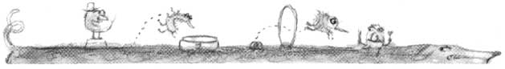

PET CONCERNS
Get the jump on these pet pests, safely.
For all our modern accomplishments, we are still searching for safe, effective means to control fleas. Unfortunately, many flea products on the market contain ingredients such as carbaryl (Sevin), a nerve-paralyzing chemical that is endowed with a host of other side effects. DDVP (dimethyl dichlorovinyl phosphate), which is found in plastic flea collars, numbs an insect's nervous system and sometimes has the same effect on a susceptible pet. Or there is that increasingly familiar synergist, piperonyl butoxide, recently used extensively as a booster in most all the new pyrethrum products. It has been associated with liver disorders. On the other hand, if fleas get out of control, your pet-particularly if it is very young, old or unwell-can die of flea-induced anemia.
When an adult flea lays an egg, this whitish speck drops into a carpet, a crack in a wood floor, the upholstery or a dusty corner. After a period of time (which varies according to species), the egg develops into a larva which feeds on tiny amounts of dust, debris or other organic matter. Outdoors, this larva takes up residence in the yard, usually in a shady spot, where it feeds on vegetable or animal matter. The hairy, legless larva then spins a cocoon and eventually emerges as a hungry adult, ready to jump on the nearest warm body for a meal of blood.
Because the egg, larva and cocoon stages are of various lengths in various flea species (the general range from egg to adult is 28 to 42 days), your initial attack should consist of a conscientious three- to five-week program. In this way, you'll gradually get ahead of the massive number of fleas and eggs now sharing your pet and probably your home. If your pets stay outdoors, you can probably follow only the instructions concerning the yard, the animals and their living quarters.
The first step-and one you will repeat often initially-is to vacuum your house thoroughly. Not just the carpets, but under throw rugs, all floors, corners, upholstery, pillows, sofa cushions, under couches, mattresses-the works! (And don't forget the basement.) Then either immediately burn the vacuum bag or seal it securely inside a plastic bag and dispose of it. Remember, all that dust inside the bag makes a fast-food feast for larvae. After patting yourself on the back for already cleaning up hundreds, maybe thousands, of fleas, eggs and larvae, wash all throw rugs, pets' bedding and your bedding in water as hot as the fabric allows.
At this point you've made encouraging progress, but unless the next steps are taken, you'll soon lose ground. To kill the tiny pests the vacuuming missed, sprinkle garden-grade diatomaceous earth in rugs, under sofa cushions, under mattresses and in your animal's bedding. After three to four days, repeat the vacuum-and-wash cycle (again destroying the vacuum bag) and reapply diatomaceous earth.
While all this activity is taking place, your canine or feline friend needs some immediate attention too. Cat or dog, a bath is in order, followed by a rinse water cooled to lukewarm-and you could add a few drops of a safe herbal flea repellent oil to that rinse. When your pet is dry, a thorough brushing, combing or even vacuuming (if the process is not too terrifying to Puff or Fido) is in order. (Pick up a special flea comb from a pet store. It not only removes fleas, but helps monitor the extent of your flea problem.)
Outside the House
To permanently eradicate outdoor fleas requires both immediate and long-term activities. First, sprinkle garden-grade diatomaceous earth over the lawn, under bushes and in shady areas. The effectiveness of this natural product (made from the shells of tiny sea creatures called diatoms) comes from its ability to scratch the fleas' exoskeletons and cause the insects to dehydrate and die. Reapply seven to 10 days later.
Over the years, MOTHER'S readers have offered their own nontoxic means of flea control. Here are some popular remedies.
Feed your dog or cat one clove of garlic a day. In addition to discouraging fleas, it will prevent some types of worms. Don't, however, give garlic to pregnant pets, because it sometimes causes spontaneous abortion.
Brewer's yeast (also called nutritional yeast) is available at most health food stores. Give large dogs one tablespoon once a day mixed into, or sprinkled on top of, their food. Try one teaspoon for cats and small dogs. Some animals love it. Others take a while to develop a taste for the yeast, but most end up begging for it.
A touch of vinegar in your pet's water is touted as a control for both fleas and mange. With all of the above, however, it's best to start such dietary programs long before the flea season hits.
You can also try a saltwater dip to discourage fleas. If you live near the sea, your dog might learn to love swimming in the ocean. Some especially energetic dog owners go so far as to provide small saltwater pools for their dogs to romp in.
Finally, our readers recommended putting a light six inches over a bowl of water containing a little dishwashing detergent. The heat attracts the fleas, which fall in the water and drown.
Since fleas are such persistent and prolific creatures, we recommend you combine all these natural remedies in your war against them.
-Sara Packer
|
ILLUSTRATION BY ANDREW SHACHAT |
 |
|